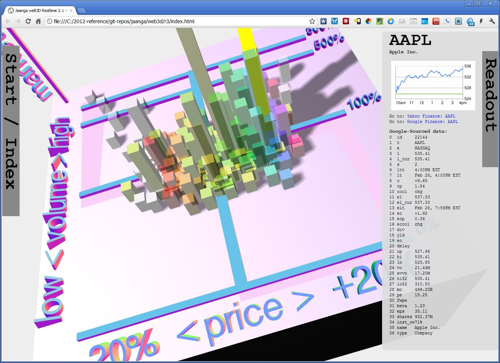

Home > Jaanga Demo Files
so many numbers...
There are now three publicly accessible demos of Jaanga.
Jaanga weB3D
You may pronounce the title of the app as "web 3D" or "we be 3D". Your choice.
Please note that this is the high end, top-of-the line version of Jaanga and requires a high-end, fast computer. You will need a browser that supports WebGL such as Firefox 4 or a recent update of Google Chrome. Internet Explorer will not work without installing a special plug-in from Google.
Pricing data is obtained from Yahoo Finance and Google Finance.
Jaanga geeDoc

Image of the 640x480 NASDAQ chart captured 01-18-2011 using Jaanga geeDoc
This version of Jaanga is being built on top of spreadsheets created by using Google Docs.
If you are a reasonably experienced creator and editor of spreadsheets, you should be able to adapt these spreadsheets for your own needs.
Price data is obtained from Google Finance and is updated usually within a minute or so of the actual transaction.
Jaanga hiChart

Image of the Dow Jones Industrials captured using Jaanga hiChart
This version of Jaanga is built on HTML files with extensive JavaScript. The JavaScript makes use of two frameworks: jQuery and Highcharts.
If you are a reasonably experienced at working with JavaScript, then you should be able to adapt this code for your own needs.
Pricing data is obtained from Yahoo Finance and is delayed until about fifteen minutes after the actual transaction.
http://jaanga.com